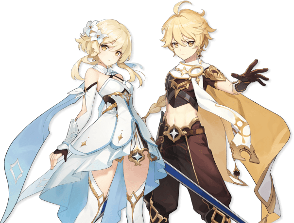

4
5
Bennett
PYRO
MONDSTADT
An orphan discovered by an elderly adventurer as a baby, Bennett was raised in Mondstadt's Adventurers' Guild. He is the one and only member of "Benny's Adventure Team," as everyone else left the team after experiencing the constant misfortune that follows him.
Xingqui
HYDRO
LIYUE
He is the second son of the Guild Manager of the Feiyun Commerce Guild, an influential group in Liyue, and is also a self-proclaimed practitioner of the Guhua Clan's arts.
Amber
PYRO
MONDSTADT
He is the second son of the Guild Manager of the Feiyun Commerce Guild, an influential group in Liyue, and is also a self-proclaimed practitioner of the Guhua Clan's arts.
Kaeya
CRYO
MONDSTADT
Kaeya is the Cavalry Captain of the Knights of Favonius. He is held in high regard by the people of Mondstadt — even with all his eccentricities and secrets.
Xiangling
PYRO
LIYUE
She is the Head Chef at the Wanmin Restaurant and runs it alongside her father Chef Mao. As a chef, Xiangling isn't afraid to try out different recipes or "exotic" ingredients... Making her dishes sometimes quite unique.
Beidou
ELECTRO
LIYUE
She is the captain of The Crux, a renowned crew in Liyue. Besides her capabilities as a fleet captain and her immense strength, many in Liyue know her for her lack of fear towards the Tianquan of the Liyue Qixing, Ningguang — a trait that the other woman appreciates, yet grows irritated by.
Kujou Sara
ELECTRO
INAZUMA
A tengu, Sara is the adopted daughter of the Kujou Clan of the Tenryou Commission. Loyal to both her clan and the Shogun, Kujou Sara carries out her orders to the Shogun's will.
Thoma
PYRO
INAZUMA
N/A

Aether and Lumine
ADAPTIVE
OUTLANDERS
The Traveler is the playable protagonist of Genshin Impact. At the beginning of the game, both genders are twin siblings from another world, traveling throughout the universe, until an unknown god blocked and captured one of them, and sealed their power to travel, leaving them stranded on Teyvat. They are accompanied by a travel companion named Paimon throughout their journey.
Venti
ANEMO
MONDSTADT
He is a free-spirited, wine-loving bard in Mondstadt and the current mortal vessel of Barbatos, the Anemo Archon. He first appears during the Archon Quest Prologue: Act I - The Outlander Who Caught the Wind.
Zhongli
GEO
LIYUE
He is later revealed to be the current vessel of the Geo Archon, Morax, who has decided to experience the world from the perspective of a mortal
Baal
ELECTRO
INAZUMA
She controls a puppet while meditating inside the Plane of Euthymia. Her current form is the vessel of Beelzebul, the current Electro Archon of Inazuma.
Jean
ANEMO
MONDSTADT
The daughter of Frederica Gunnhildr and Seamus Pegg, the older sister of Barbara, and a descendant of the prestigious Gunnhildr Clan, Jean is the Acting Grand Master of the Knights of Favonius. She is always busy handling unrest across Mondstadt and of course, tirelessly working to maintain the City of Freedom.
Ganyu
CRYO
LIYUE
She serves as an emissary and secretary for the Liyue Qixing.
Arataki Itto
GEO
INAZUMA
N/A